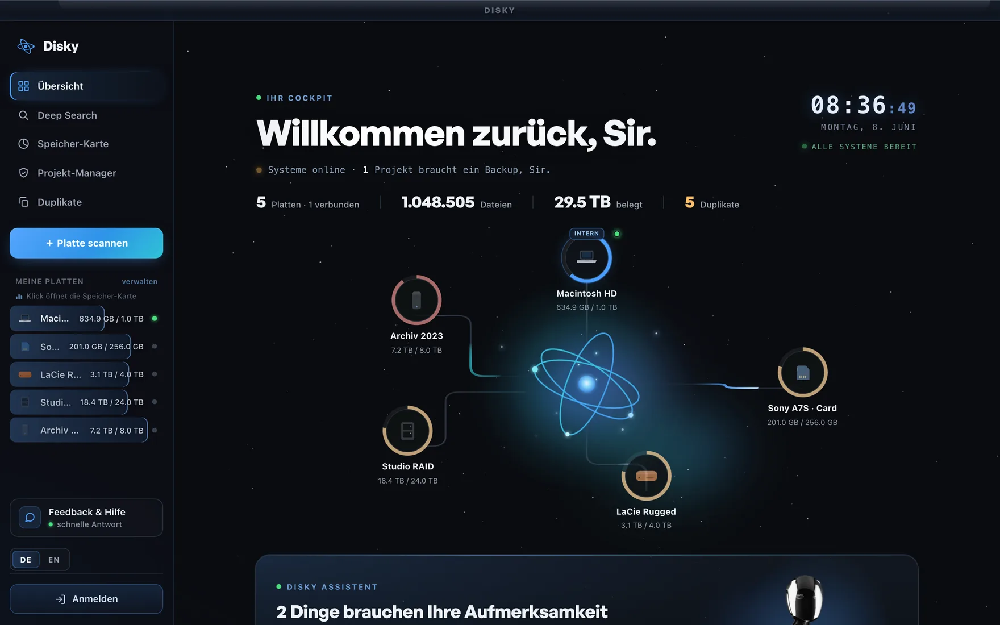
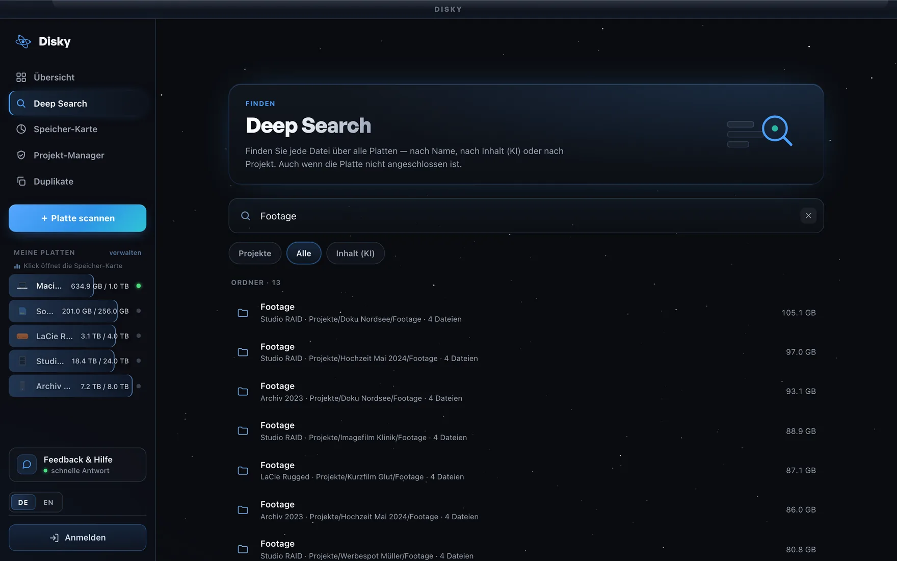
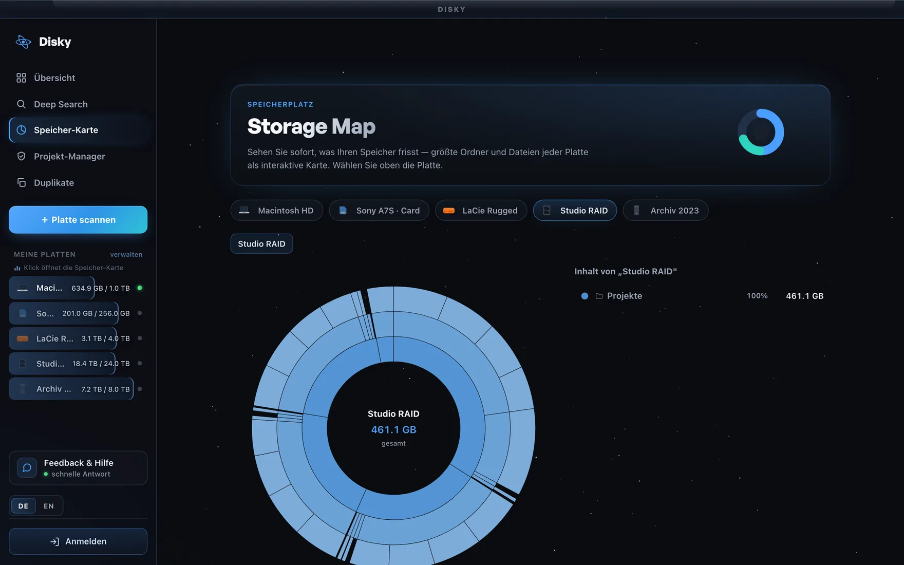
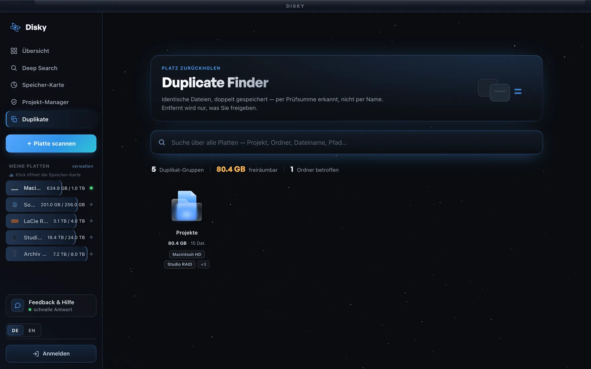

Einmal einrichten. Für immer den Überblick.
Steck jede Platte einmal an. Disky liest sie (nur lesend) aus und merkt sich alles — auch wenn sie längst im Schrank liegt.
Wie ein stiller Assistent verfolgt Disky im Hintergrund, was gesichert ist, was doppelt liegt, was Platz frisst und was noch aktiv oder schon fertig ist — ganz von selbst.
Disky sagt dir von selbst Bescheid, wenn's zählt — „dieses Projekt hat kein Backup", „32 GB freigebbar". Und wann immer du suchst: tippe einen Namen und finde jede Datei in Sekunden über alle Platten.
Der Unterschied zwischen „liegt irgendwo auf einer Platte" und „in 2 Sekunden gefunden".
Jede einzeln stark. Zusammen unschlagbar.
Disky läuft still im Hintergrund und meldet sich nur, wenn's zählt: welches Projekt noch kein Backup hat, wo unnötiger Speicher liegt, was du gefahrlos freiräumen kannst. Kein Mehraufwand — Disky nimmt dir Arbeit ab.
Disky hält jede Festplatte offline einsehbar. Tippe einen Projekt- oder Dateinamen und sieh in Sekunden, auf welcher Platte es liegt — auch wenn alle längst im Schrank liegen. Nie wieder zehn Platten durchstecken, nur um eine Datei zu suchen.
Tippe „underwater" und Disky zeigt dir jeden Clip mit Wasser — über all deine Platten, ohne eine einzige anzustecken. Die KI läuft komplett auf deinem Mac: kein Upload, keine Cloud.
Die Speicher-Karte zeigt jeden Ordner als Ring. Klick dich rein, bis du die eine Datei findest, die 200 GB blockiert. Ein Aufräum-Assistent markiert sogar automatisch Entbehrliches — After-Effects-/Premiere-Cache, Proxies und Duplikate — und rechnet dir auf den Gigabyte vor, wie viel du freiräumen kannst. Gelöscht wird nur, was du selbst freigibst.
Disky erkennt gleiche Dateien über alle Platten hinweg — selbst wenn sie anders heißen — und sagt dir auf den Gigabyte genau, wie viel du freiräumen kannst.
Alles läuft lokal auf deinem Mac. Kein Upload, keine Cloud, kein Konto-Zwang. Disky liest nur — und verändert auf deinen Platten niemals etwas.
Keine Cloud, kein Konto-Zwang, kein Risiko. Disky ist ein Wächter — kein Sammler.
Die ersten 2 Platten sind gratis. Danach, wie du willst:
Sichere Zahlung über Lemon Squeezy · Steuern inklusive · 14 Tage Geld-zurück · schon gekauft? Lizenz aktivieren
Ein Download, fertig. Scanne deine erste Platte in Sekunden — die ersten 2 sind gratis.
Wir legen gerade den letzten Schliff an (Notarisierung). Trag dich ein – du bekommst den Download als Erste:r.
Scanne deine erste Platte in Sekunden — die ersten 2 sind gratis, nichts wird verändert.
Kein Konto · 100% lokal · 14 Tage Geld-zurück